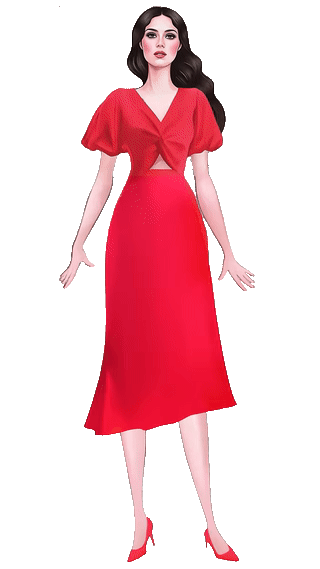

В Chrome/Firefox прозрачность нативная. В Safari 18.5 движок CoreMedia заменяет альфа-канал белым прямоугольником.
Математическое умножение цвета: Белый (1.0) × Цвет фона = Цвет фона. Белый прямоугольник исчезает на фоне.
Сконвертирован из WebM с палитрой прозрачности. 100% совместимость со всеми версиями Safari и iOS через обычный <img>.

Скрытое видео рендерится на Canvas в реальном времени. Скрипт на лету удаляет белый фон пикселей без искажения цветов модели.
Safari 14+ поддерживает анимированный WebP с полноценным 8-битным альфа-каналом. Весит меньше GIF и имеет гладкие полупрозрачные края.
Тег <video> с двумя источниками: Safari забирает video/mp4; codecs="hvc1", Chrome/Firefox забирают video/webm.